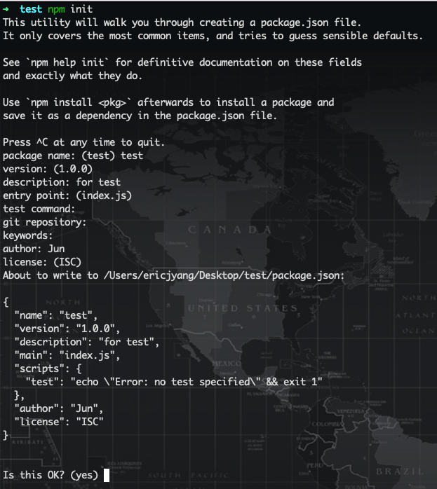
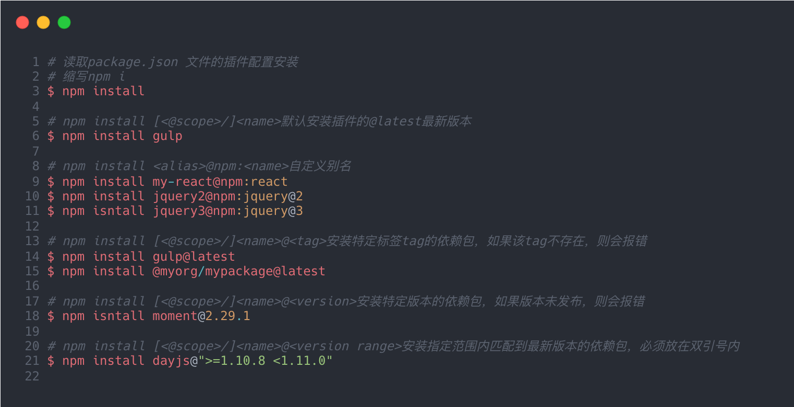
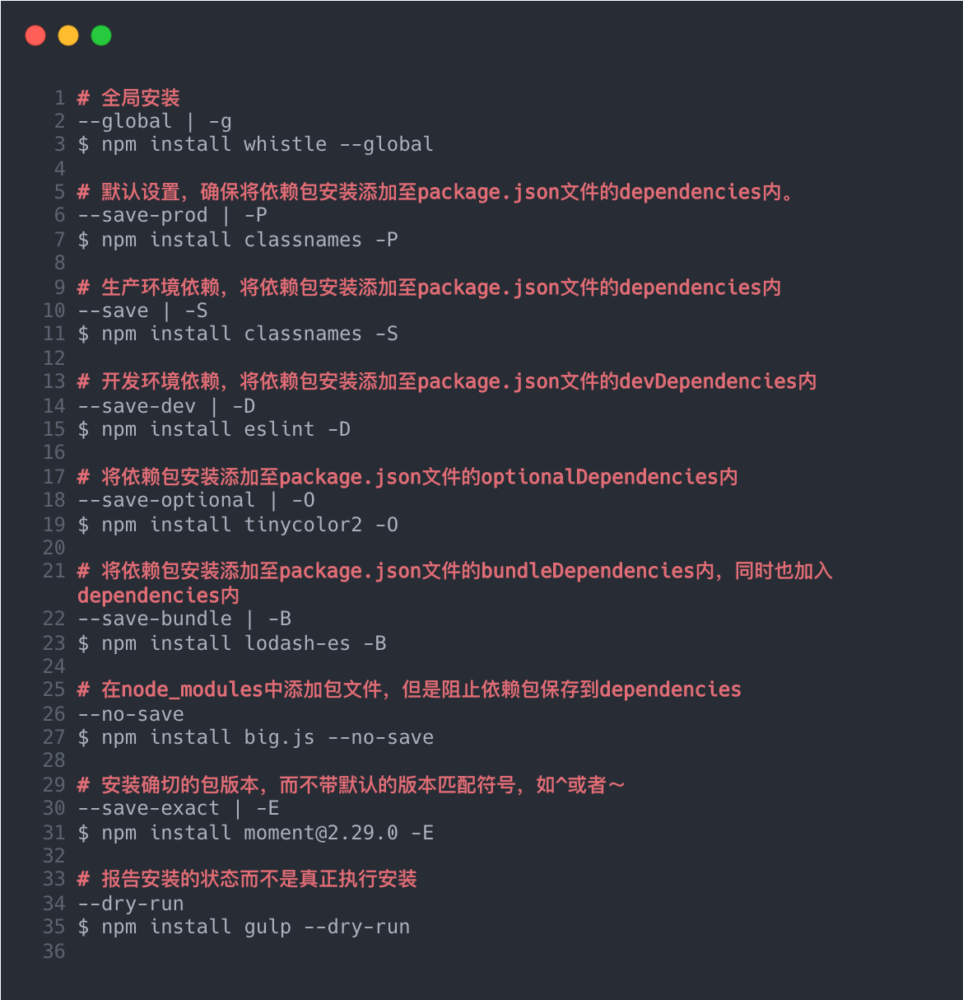
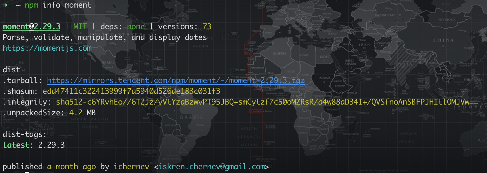
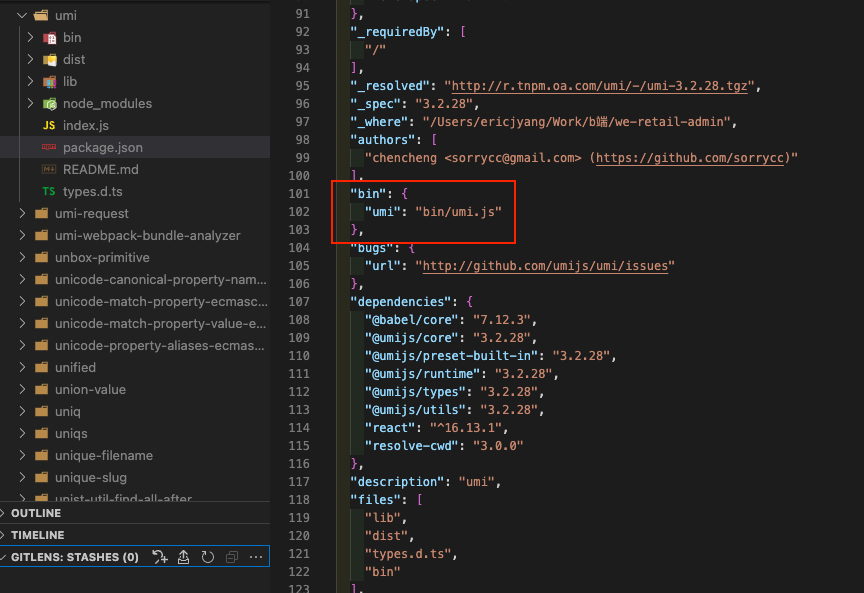

一起认识npm
关于 npm
NPM（node package manager）是 Node.js 官方提供的包管理工具，用于 node 包的管理（包括安装、卸载、管理依赖等）。发展到现在 npm 已经成为世界上最大规模的包管理系统，为广大开发者构建了一个友好的开源平台，用户能够向 NPM 服务器上传自己编写的第三方包或者命令行程序，也可以下载别人编写的至本地使用。
会使用 npm 最基本的 npm init、npm install 等命令几乎就可以将包管理实施在项目里，然后 npm 远不止这些。
本文是笔者出于兴趣挖掘的一些 npm 常用的原理、特性以及个人实践。
安装使用
npm 不需要单独安装，在安装 Node 时会连带一起安装。但是 Node 附带的 npm 版本也可能不满足需要，有时可能会涉及到需要调整 npm 的版本，或者升级到最新版本。
1 | # 下载最新版本npm |
这里还是推荐使用 nvm 进行 Node 版本管理，切换 Node 的同时也可以切换 npm 的版本。
如果能成功查看 npm 的版本则表示安装成功了
1 | $ sudo npm -v |
npm 版本号
npm 的版本遵循 semver 规范。版本号格式为 major.minor.patch，且 major，minor，patch 均必须为非 0 开头的非负数。
- 有效版本：1.0.4、0.5.9
- 无效版本：0.2.04、1.a.a
- major（主版本号）：当 API 发生改变，并且产生 breaking change 无法与之前版本兼容
- minor（次版本号）：当功能变更，但是向后兼容
- patch（补丁版本）：bug 修复，但是向后兼容
版本匹配
- ～ 会匹配最近的小版本，比如：～ 1.2.1 会匹配所有 1.2.x 的版本，但是不包括 1.3.0
- ^ 会匹配最新的大版本，比如：^1.2.1 会匹配所有 1.x.x 的版本，不包括 2.0.0
- 无前缀，比如 1.2.3，只会匹配特定 1.2.3 版本
- - 保持最新的版本，容易因为版本兼容引起问题
推荐使用～为主，可以保证项目不出大问题的情况下又能让包中的小 bug 修复。使用^和* 需要谨慎防止因为包的改动过大造成项目代码错误。
npm 常用命令
npm init
npm init 命令用于创建一个新的或者已存在的 npm 包，随之在目录下生成或者更新一个名为 package.json 的文件。
使用此命令时，会向用户提出一系列默认问题并根据此生成 package.json 文件的最初版

如果不希望回答而直接生成 package.json 文件，可以一路回车完成创建，毕竟 package.json 文件后续还是可以更改。
或者添加 init 的配置 -f（代表 force）、-y（代表 yes）跳过提问阶段，直接生成新的 package.json 文件
1 | $ npm init -y |
npm config
npm config set 用于设置环境变量
1 | $ npm config set init-author-name 'My Name' |
npm config set 相当于增加了 init 的默认值，以后执行 npm init 的时候 package.json 中的对应字段就会直接生效。
npm install
npm install，缩写 npm i ：可以根据 package.json 的配置安装插件。如果一个包有 package-lock、npm-shrinkwrap 或者 yarn.lock 文件，则依赖包的下载将会被这些文件驱动，并遵循以下优先级：
- npm-shrinkwrap.json
- package-lock.json
- yarn.lock
命令行 npm install [<@scope>/]<name> 则会下载安装一个依赖包以及其依赖的所有其他依赖包。
具体命令详情：

运行上述命令，在 npm init 创建的默认 package.json 文件中的 dependencies 字段中会添加入对应的插件包：

通用可选参数: [-P|–save-prod|-D|–save-dev|-O|–save-optional] [-E|–save-exact] [-B|–save-bundle] [–no-save] [–dry-run]
具体参数说明：

npm uninstall
npm uninstall 用来卸载已经安装的包，参数与 install 的类似，可以通过在命令行后面加-g | -S | -D | -O | –no-save 等进行限制。
如果有 npm-shrinkwrap.json 文件的话，也会被同时更新。
npm search
npm search <name>用于搜索 npm 仓库对应的包名，如果搜索不成功有可能是 regisrty 改变导致的，注意查看.npmrc 内的 registry。
npm info
npm info 可以查看每个模块的具体信息，比如查看已经安装的 moment 包信息：

npm update
通常使用 npm update 命令去更新一个包，同样如果加了参数-g 表示更新全局的包版本，否则则是更新项目中的版本
npm list
npm list 用于查看已安装的模块。-g 参数表示查询全局安装的包，–depth 0 可以限制查询深度。
npm run
通常我们用 npm run 执行脚本命令。package.json 文件中的 scripts 字段存放着可以供 npm 直接调用的脚本命令。
执行 npm run 不带任何参数，那么会列出 package.json 内所有可以执行的脚本命令。start 和 test 属于特殊命令可以省略 run 直接执行。
原理：
npm 在执行 install 时，会根据第三方依赖中的 package.json 文件中的 bin 配置，在项目 node_modules 下面的.bin 目录中生成一个可执行文件。
npm 运行 scripts 脚本时会自动给脚本路径加上 node_modules/.bin 前缀，这意味着每次运行 script 脚本时，实际上运行的是 node_modules/.bin 下对应的软链接文件，此软连接在 npm i 时就已经完成配置，相当于一种映射。
以 umi 包为例：
在执行 npm i umi 命令之后，node_modules 目录中会生成 umi 文件夹，且.bin 目录中也会生成 umi 文件。

从 umi 包的 package.json 中可知，npm 将 bin/umi.js 作为 bin 声明了。所以 npm i 的时候，npm 读取此配置并将此文件软链接到./node_modules/.bin 目录中。
另外 npm run 会将 node_modules/.bin 加入到 PATH 中以支持脚本的运行。所以在编写 scripts 命令时如果需要运行安装的可执行文件时不需要添加前缀 node_modules/.bin，如 gulp 的使用：
1 | "scripts":{ |
npm run 中含有 pre-和 post-两个钩子函数，分别表示在此脚本之前和之后执行对应命令。
1 | "scripts": { |
在终端执行 npm test 或 npm run test 时，脚本运行顺序为 pretest>posttest>test。
npm publish
npm publish 用于将包发布至 npm 仓库。如果没有账号，则需要在https://www.npmjs.com注册用户。注册完用户在终端输入执行 npm login 进行登陆，登陆成功后执行 npm publish 将包发布。
引用
- npm 全面介绍
- CLI Commands